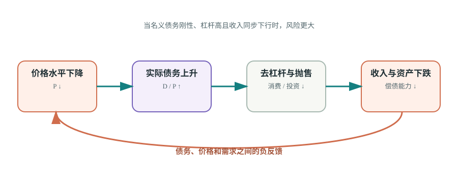

货币银行学 · 第 21 章
为什么通货紧缩可能变成经济陷阱？
区分通缩与通胀放缓，推导债务通缩和实际利率机制，理解流动性陷阱与零利率下限，并分析财政政策、前瞻指引和资产购买的作用边界。
如果所有商品都便宜一点，消费者似乎会受益。但当总体价格水平持续下降，名义收入和资产价格也可能走弱，而既有名义债务不会自动减少。借款人实际偿债负担上升，支出和投资被压缩，企业收入下降又使偿债更困难。通缩的危险不只是价格变低，而是价格、债务、收入和信用之间可能形成自我强化的反馈。
先区分通缩、通胀放缓和相对价格下降
通货紧缩（deflation）指总体价格水平持续下降；通胀放缓（disinflation）指价格仍在上涨，但上涨速度下降。某一种商品因技术进步或供给充足而降价，也不等于总体通缩。
通缩的性质取决于来源和持续时间。生产率提高使商品更便宜、产出同时增长，可能是供给改善带来的价格下降；总需求收缩、信用危机或资产泡沫破裂引发的广泛价格下降，则可能伴随失业、破产和金融压力。IMF 对通缩的讨论也区分了需求冲击与技术进步等供给冲击，并强调持续、广泛且自我强化的通缩风险。[3]
债务通缩：名义债务不变，实际负担上升
假设企业欠银行 100 万元固定名义债务。如果总体价格水平从 1.00 降到 0.95，而债务本金仍是 100 万元，那么按价格水平折算的实际债务负担会从 100 万个基期购买力单位上升到约 105.26 万个单位。计算式为：
当价格水平下降时，固定名义债务的实际价值上升。如果企业销售收入、工资和资产价格同时下降，偿债能力可能比债务余额本身恶化得更快。
欧文·费雪在 1933 年提出债务通缩理论，强调过度负债、被迫抛售、价格下跌和实际债务负担上升之间的相互作用。[1] 现代研究通常把它作为理解高杠杆经济体中通缩反馈的经典机制，而不是认为每次物价下降都会自动触发大萧条式螺旋。

预期通缩会推高实际利率
事前实际利率可用费雪近似关系理解：
若名义利率 i 已接近有效下限，而公众预期价格继续下降（πᵉ 为负），实际利率就可能保持在较高水平。例如名义利率为 0.25%，预期通胀为 −2%，近似实际利率为 2.25%。对企业和家庭而言，实际借款成本可能并不低，投资和消费因此继续受压。
现实中的有效下限不一定精确等于零。现金替代、银行盈利、金融市场结构和政策制度会影响名义利率还能下降多少。即使名义利率不能大幅下调，央行仍可能通过影响预期、期限溢价和资产价格来改变更广泛的金融条件。
流动性陷阱：为什么增加货币未必压低利率？
流动性陷阱是凯恩斯传统中的一个概念：当短期名义利率极低，公众认为债券价格下跌（利率上升）的风险大于持有低收益货币的机会成本时，额外流动性可能被大量持有，而不再显著压低短期利率。在简单 IS–LM 图形中，LM 曲线在低利率区域可能变得近乎水平。通缩与流动性陷阱不是同义词：通缩描述总体价格水平持续下降；流动性陷阱描述低名义利率环境下常规短端利率工具受到约束。两者可能互相强化，但并非逻辑等价。[3]
这并不意味着货币政策在低利率环境下必然完全无效。央行仍可通过前瞻指引、较长期限资产购买、改变资产组合和信用条件来影响收益率曲线和通胀预期。2004 年美联储研究对 1930 年代美国经验的再考察指出，不能仅凭短期利率接近零就断言货币政策失去作用；政策操作和预期管理仍然重要。[5]
因此，流动性陷阱描述的是常规短端利率工具受限、货币与短期债券接近替代的特殊环境，不是一个“央行无论做什么都没用”的定理。
应对通缩：货币政策与财政政策如何配合？
如果通缩风险来自总需求不足和预期下滑，政策需要防止实际利率被动上升、稳定名义收入预期并修复信用传导。可用措施包括：
- 及时调整政策立场：在通胀预期和需求持续走弱时，避免因观察滞后数据而过晚反应。
- 前瞻指引与可信承诺：说明未来政策如何响应通胀和就业变化，减少公众对持续通缩的预期。
- 资产购买和流动性工具：在短期利率空间有限时，改善市场流动性、压低较长期融资成本或缓解特定市场功能失灵。
- 财政政策：当私人部门集中去杠杆、消费和投资不足时，财政支出和自动稳定器可以直接支持总需求。
- 修复金融资产负债表：透明确认损失、重组不可持续债务、恢复银行资本和贷款能力，避免流动性支持掩盖偿付能力问题。
美联储关于日本 1990 年代经验的研究认为，一旦通胀转负、短期利率接近零下限，重新激活经济会更困难，并强调货币和财政刺激都需要考虑通缩风险。[2] 日本银行对其非常规政策历史的回顾记录了零利率政策、量化宽松、QQE 和收益率曲线控制等阶段，也说明政策工具和操作目标会随制度环境演变。[4]
日本经验：长期低通胀不是单一原因的结果
日本资产泡沫在 1990 年代初破裂后，金融机构资产质量、企业债务、资产价格和总需求经历长期调整。日本银行在 1999 年实施零利率政策，2001 年开始量化宽松；随后又推出综合宽松、量化与质化宽松（QQE）、负利率和收益率曲线控制等措施。日本银行对其非常规政策历史的官方回顾记录了零利率政策、量化宽松、QQE、负利率和收益率曲线控制等阶段。[4]
把日本的长期低增长简单归因于“央行没有印够钱”或“人口老龄化”都过于单一。资产负债表修复、银行不良资产、企业投资意愿、人口结构、生产率、财政政策和通胀预期共同影响了调整过程。美联储研究指出，日本通缩在早期并未被政策制定者充分预见，政策刺激不足和反应时机是研究讨论的重要部分。[2]
历史案例适合用来识别机制和政策风险，不适合把一个国家的经验直接套用到另一个国家。债务结构、金融机构资产质量、货币政策制度、财政能力和人口结构都需要单独比较。
交互练习：通缩下的实际利率与债务负担
同时计算实际利率和实际债务
用费雪近似式计算预期实际利率，并把固定名义债务按预期价格水平折算。价格水平以当前为 1。
实际利率约 2.25%；若价格水平下降 2%，实际债务负担约为 102.04 万个当前价格基期单位。
核心结论
- 通缩是总体价格水平持续下降；通胀放缓和单个商品降价都不等于通缩。
- 名义债务不会自动随价格下降而减少，实际债务负担可能上升并压缩支出。
- 预期通缩会在名义利率接近有效下限时推高实际利率，流动性陷阱会限制常规短端利率工具。
- 非常规货币政策、财政支持和金融资产负债表修复可以互补，但都存在制度条件和副作用。
Worked reasoning
算一遍：通胀放缓与价格下跌的债务影响有何不同？
假设一笔固定名义债务为 100 万元。若物价指数从 1.00 降至 0.95，以原来购买力衡量的实际负担为 100÷0.95≈105.26 万个基期单位；若物价指数从 1.00 升至 1.02，只是涨价较慢，实际负担则为约 98.04 万单位。只有前者是价格水平下跌的通缩案例。
若名义利率为 1%、预期通胀为 −3%，精确事前实际利率为 1.01÷0.97−1≈4.12%，可能进一步增加借款人的真实负担。不过债务契约可重定价、收入或工资不一定按同一价格指数变化，不能仅由 CPI 下降直接断言每一位债务人都会破产。
若把案例迁移到真实地区或机构，应重新检查合同、统计口径和时点。
Connect the ideas
把这个问题放进更大的金融系统
下面是与本节机制直接相关的三个问题。每个链接都进入另一篇文章的具体解释位置；当前文章无需依赖它们即可独立理解。
参考资料
- Irving Fisher：The Debt-Deflation Theory of Great Depressions（1933）
- Federal Reserve：Preventing Deflation — Lessons from Japan’s Experience in the 1990s（2002）
- IMF：Should We Be Worried About Deflation?（2003）
- Bank of Japan：Overview of Unconventional Monetary Policy Measures from the Late 1990s（2024）
- Federal Reserve：Monetary Policy in Deflation — The Liquidity Trap in History and Practice（2004）
模型和历史案例均有适用边界。使用宏观统计或比较不同国家时，应核对指标定义、样本期间、政策制度和研究假设。